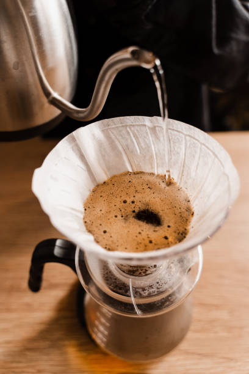
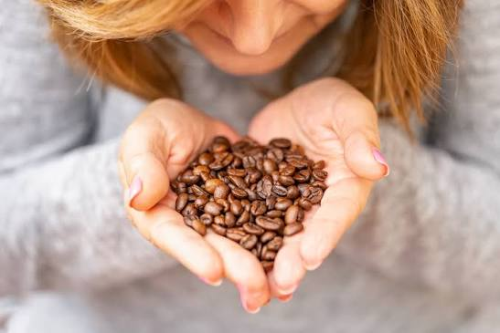
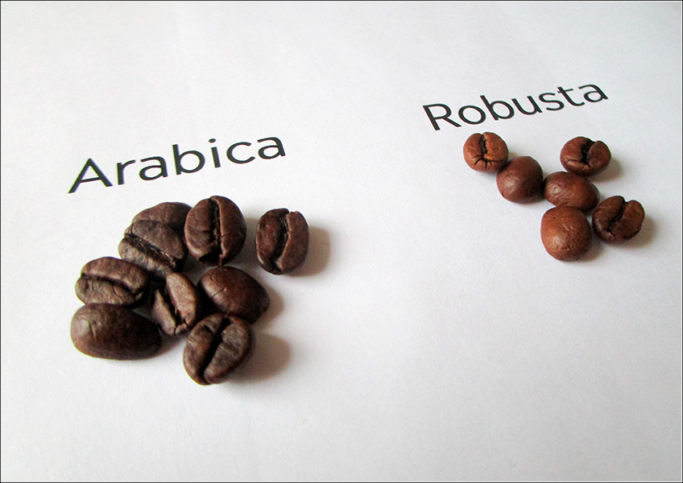

Bem-vindo ao nosso universo cafeeiro
Este blog tem como funcionalidade explorar a fascinante jornada do café especial, guiando você desde o pé de café até a xícara. Aqui você descobrirá os segredos da gastronomia cafeeira através de conteúdos detalhados sobre preparo, sabor e origens.
Em Destaque
Métodos de Extração

Aprenda como a moagem, a temperatura da água e o tempo alteram o corpo e o sabor da bebida.
Notas Sensoriais

Descubra como identificar aromas, doçura natural e acidez na sua xícara.
Universo do Café

Entenda as diferenças entre Arábica e Robusta e como elas impactam diretamente o sabor.
Receitas

Explore receitas deliciosas utilizando café como ingrediente e descubra novas formas de apreciar essa bebida.